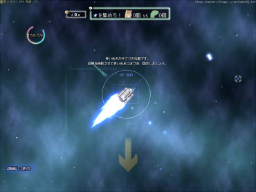

■
2015-09-05 (土) 戦術STGからプラネット▼
ということで新作マウスアクション『プラネットハウル』公開まで
もう2週間を切ってしまいました。
今ごろになって高速で薄い壁にぶつかると突き抜けるバグが発覚したり、
Windowsキーを押してホニャララすると
画面が真っ暗になったまま戻らなくなったりするバグが判明したりと、
地味なんだけど明らかに直さないとまずいバグが出てきてややピンチです。

ゲーム画像を見ると何となく面影があるのがお分かりかもしれませんが、
実はプラネットハウルは『戦術STG（仮称）』用に作っていたシステムを
ベースにしています。
【戦術STGの経緯と今】
余談ですが、もともと戦術STGは以下のような方向性を考えていました。
（※日誌で情報を出したのは片道勇者の後の2013年でしたが、構想そのものや
作り直す前の超ミニプロトタイプ自体は片道勇者の前からあったものです）
●[企画]反射神経のいらないシューティングゲームを作ろう！
→ まずシューティングゲームの楽しみといえば「パターン構築」。
→ 反射神経不要にするなら「ターン制」や「一時停止ゲーム」になる。
↓ 「ターン制」で「パターン構築」するゲームを色々検討。
→ 細かく移動指定して進めるゲーム？ それとも、
攻撃手段たくさん持たせていつ使うか考えさせるゲーム？
それでターン制とかにすると操作めんどくさすぎね？
どうすれば操作の複雑さを解決できるだろうか？
→ ちょっと作ってみたけど面白く作れる見込みがなさそう。
ここで思考が止まり、開発は停止しました。
2年ほど経ち、片道勇者の後の2013年からもう一度チャレンジしてみようと
きれいに作り直したりしてみましたが、やっぱり同じ辺りで
つまらなさを感じて止まってしまいました。
（この構想を「片道と比べるとピクリ度85点」とか言ってましたが高すぎましたね）
そもそも冷静に考えてみれば、「パターン構築」を「ターン制」で行わせると、
結局のところ「答えがいくつかあるパズルゲーム」になってしまいます。
さらに、移動が自由なシューティングを無理に「ターン制」にすると
プレイヤーが行うべき指定が色々と面倒くさくなって
元のSTGよりめちゃくちゃテンポが悪くなるだけだと思ったので、
「操作手続きが面倒なパズルゲーム」になるだけなら作る価値がないな、
と私は判断しました。
そんなこんなで、戦術STGは私の中でいまいちな企画と化します。
いま見直すと、最初から『パズルゲームSTG』として作るなら
非常にアリな企画だったかもしれません。
が、その当時の自分は「リプレイ性を高くしたい / 何度も遊べるようにしたい」
という欲求がどこかにあって、それが、
この企画がしっくり来ない大きな理由になっていました。
「パターン構築」と「ターン制」の組み合わせは、
そもそも「リプレイ性」と食い合わせが悪いのです。
【戦術STGの心と体】
「強制横スクロールRPG」である片道勇者を作ろうと考えたのは、
この「反射神経のいらないシューティングゲームを作ろう」という意図を
ひそかに継承している部分が大きかったような気がしています。
●「強制スクロール制が多いSTG」を「ターン制」にして遊べないだろうか
●「ターン制でリプレイ性の高いゲーム」を作るなら「ランダム性が必要」
というモヤモヤっとした考えが合わさった結果、
「そうか、それなら『強制横スクロールRPG（ランダム性強め）』だ！」
という発想に繋がったのかもしれないなと今になって思います。
当時は、それを意識的に考えていたわけではないんですけどね。
ただ、「強制横スクロールRPG」が当時考えていた
色んな問題を解決するアイデアだったことは間違いないと思います。
そんなわけで、ボツになったかのように見える「戦術STG」は
「片道勇者」にその「心」を受け継ぎ、いまも皆さまのお手元で遊ばれています。
そして、「戦術STG」の「体」であるシステム処理自体は
普通にSTGやアクションゲームが作れるシロモノだったので、
最近になってそれを『プラネットハウル』に使うことになりました。
なんだかんだで「戦術STG」は無事、心も体も次のゲームに活かされています。
ただし、『プラネットハウル』はかなりニュータイプ向けになりそうですので
ご期待……もといご覚悟をお願いいたします。
頭がおかしいと思われかねない操作性のゲームは、
やはりフリーゲームならではだと思っています。
ではリリースまでの残り二週間近く、がんばっていきたいと思います。 カテゴリ: ﾌﾟﾗﾈｯﾄﾊｳﾙ
カテゴリ: ﾌﾟﾗﾈｯﾄﾊｳﾙ カテゴリ: ﾌﾟﾗﾈｯﾄﾊｳﾙ
カテゴリ: ﾌﾟﾗﾈｯﾄﾊｳﾙ